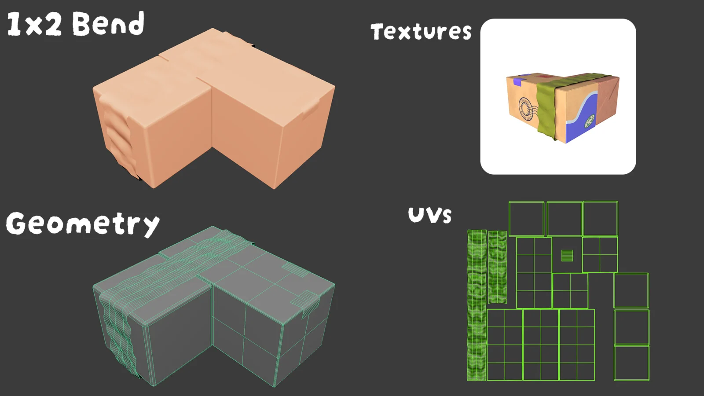
Concept reference
Concept art by Athena Wang.
3D is a supporting part of my design practice. Working inside art and real-time pipelines helps me communicate with production teams, understand implementation constraints and design with the full product pipeline in mind.
I translated Athena Wang’s package concepts into game-ready 3D models and UV layouts. Leo Daynard created the final textures.

Concept art by Athena Wang.

My contribution: 3D modeling + UVs. Textures by Leo Daynard.
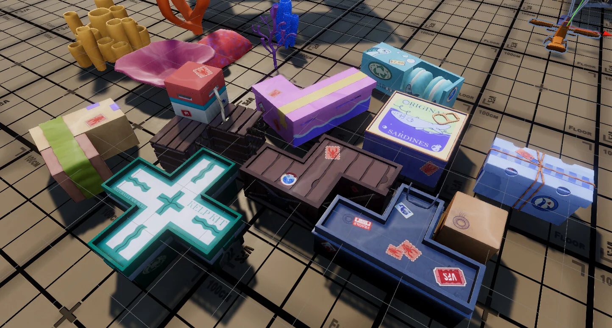
The props were built for direct use in the playable Lobster Loader environment.
One of the more structurally complex package shapes.
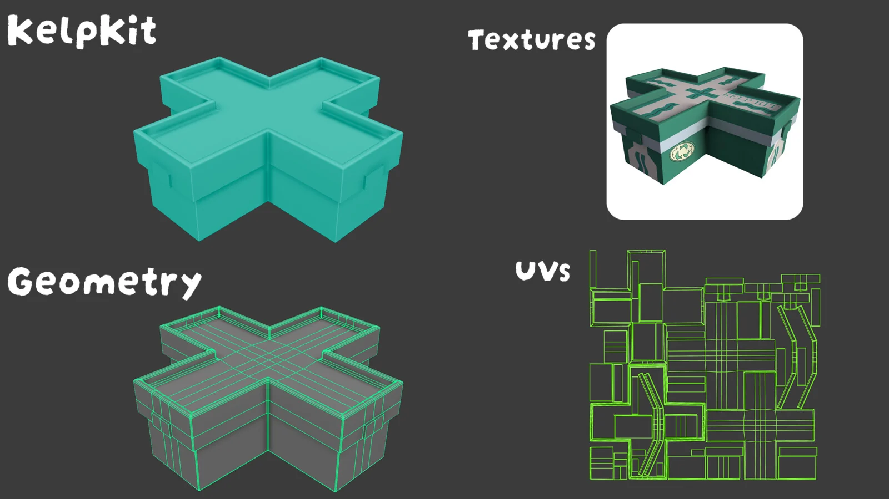
Model and UV breakdown for a cross-shaped package.
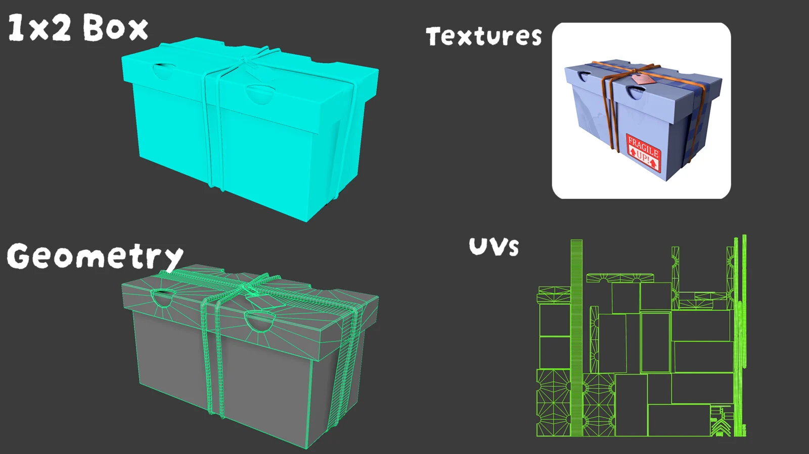
A cleaner hard-surface example from the production set.
A modeling, material, lighting and composition study, paired with isolated Substance Painter material renders.

The full scene: a more realistic rendering direction focused on material contrast, lighting and composition.
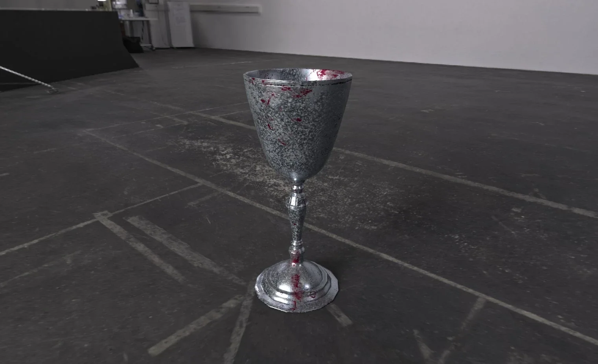
Isolated Substance Painter render.
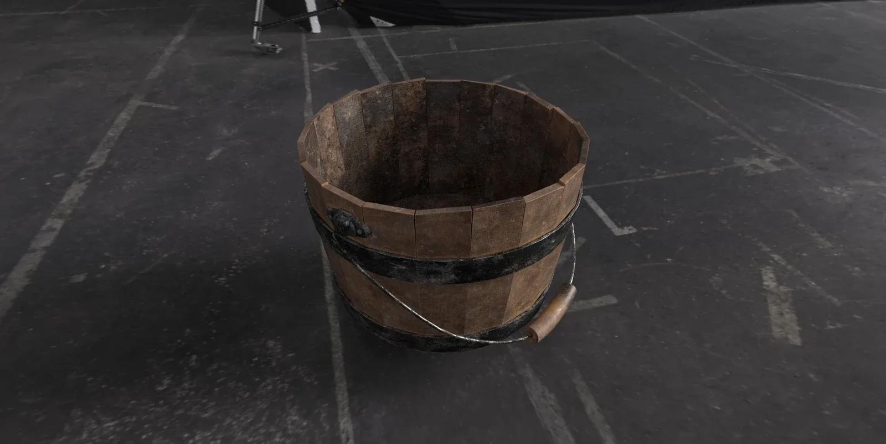
Isolated Substance Painter render.
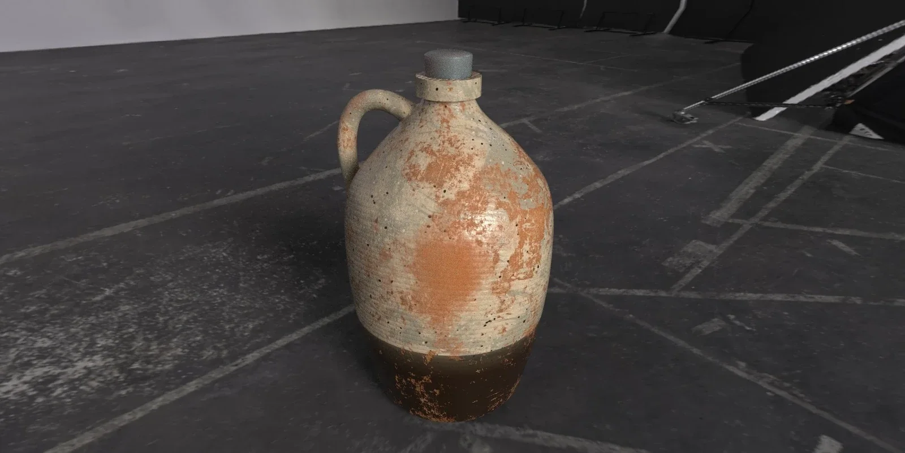
Isolated Substance Painter render.
My first 3D project: a Rolex chronograph reimagined with details inspired by The Legend of Zelda: The Wind Waker. I keep it here as a marker of where my 3D work started.

Full watch presentation.
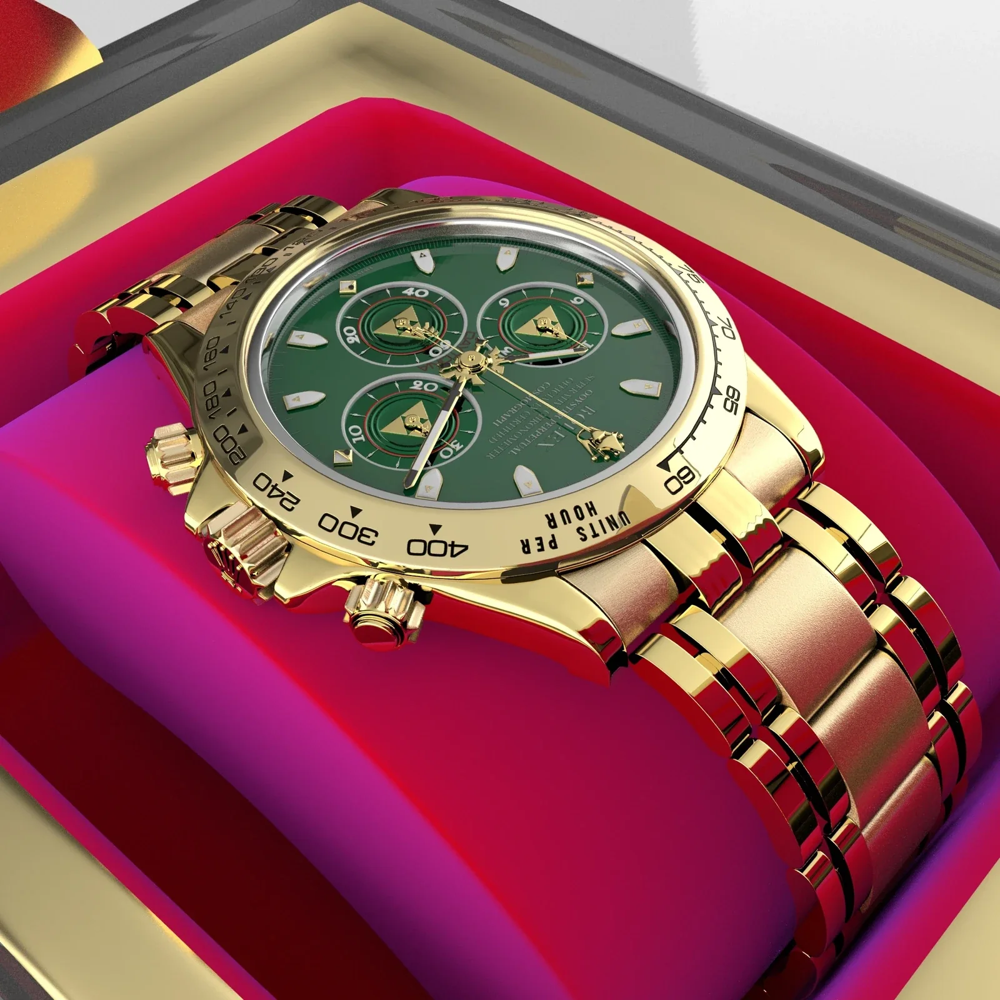
Case, bracelet and dial presentation.
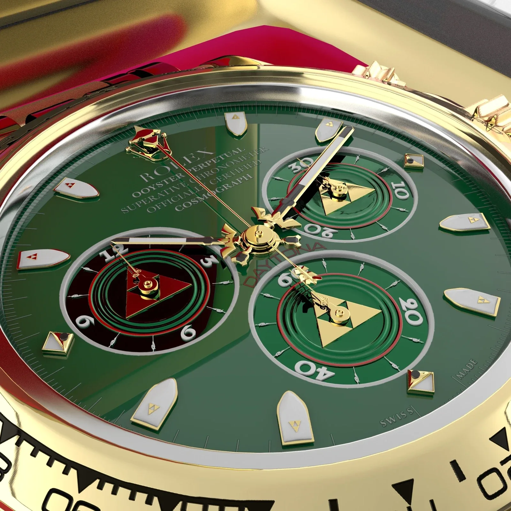
Close-up of the face and chronograph details.
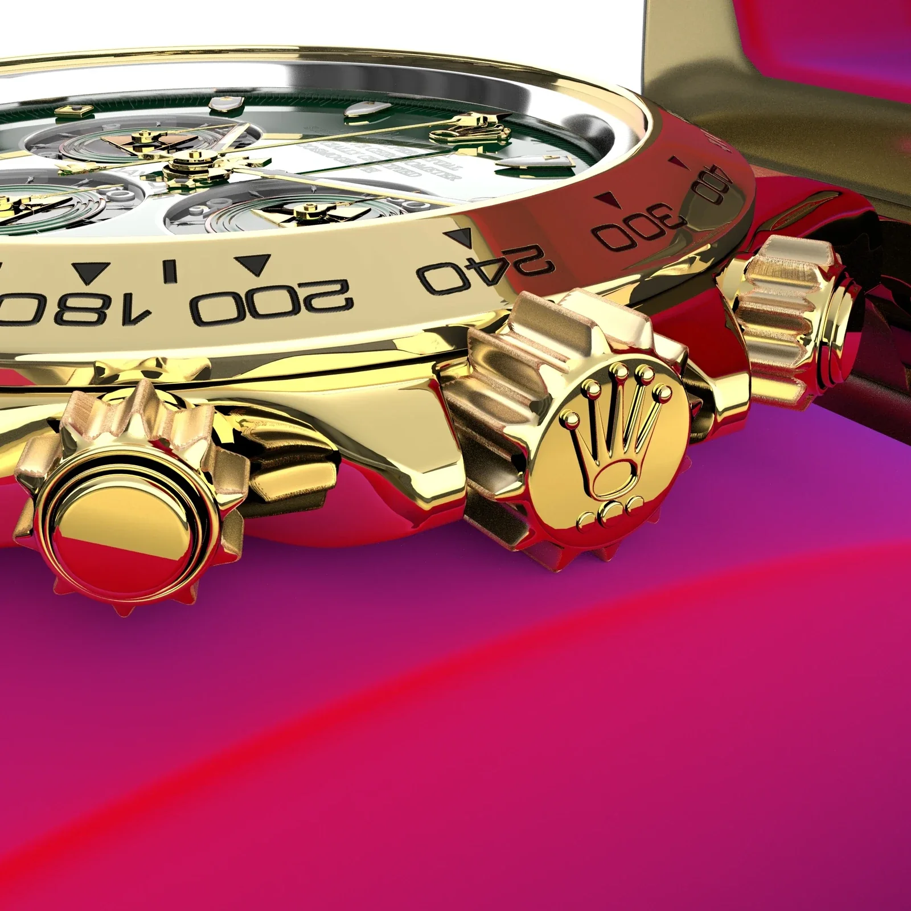
Close-up of the bezel, pushers and crown.
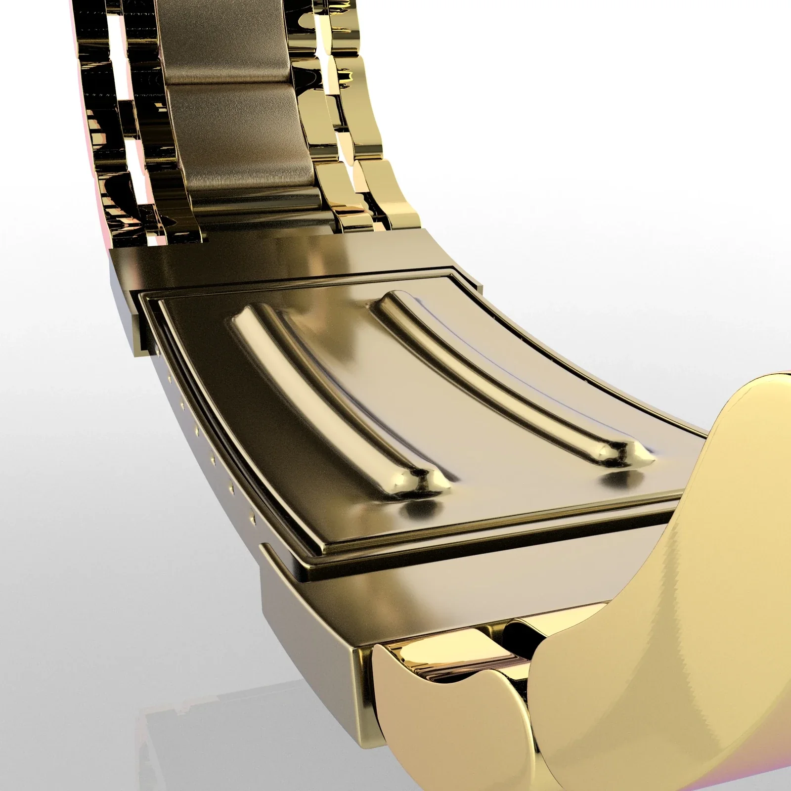
Bracelet and clasp study.